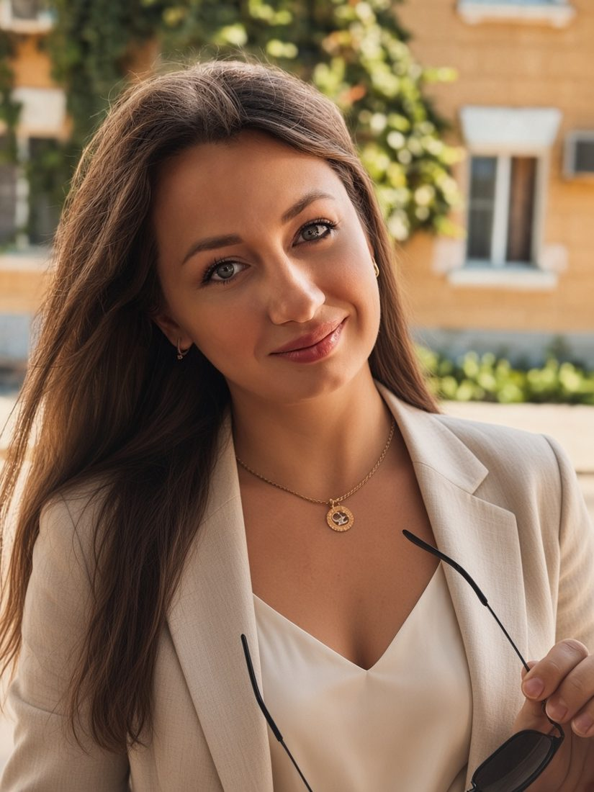
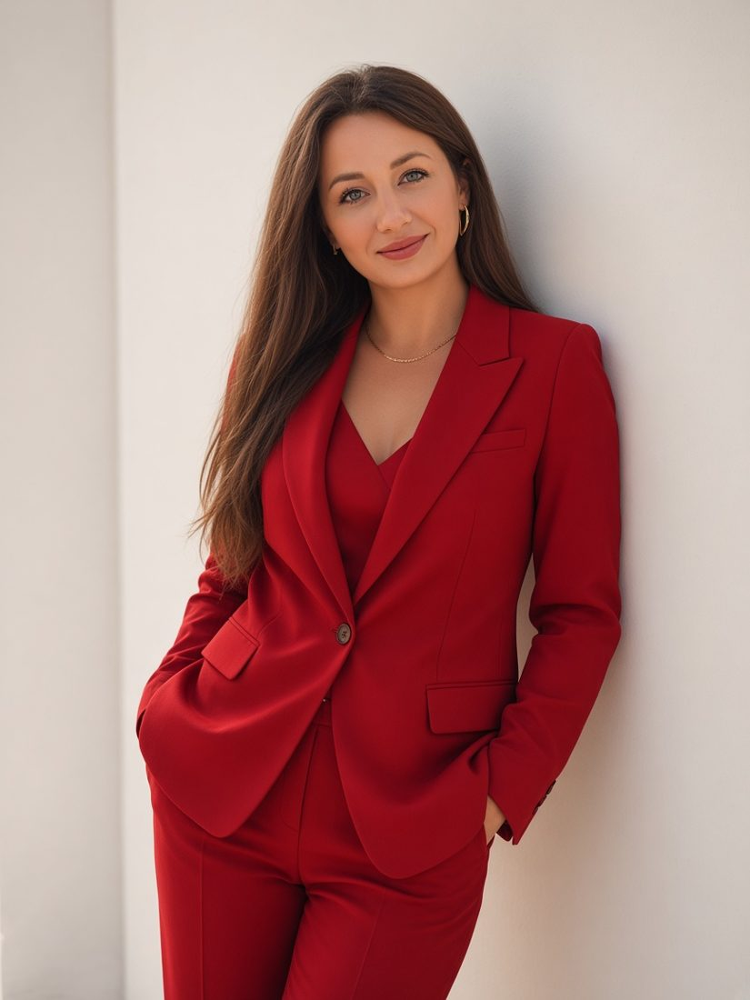
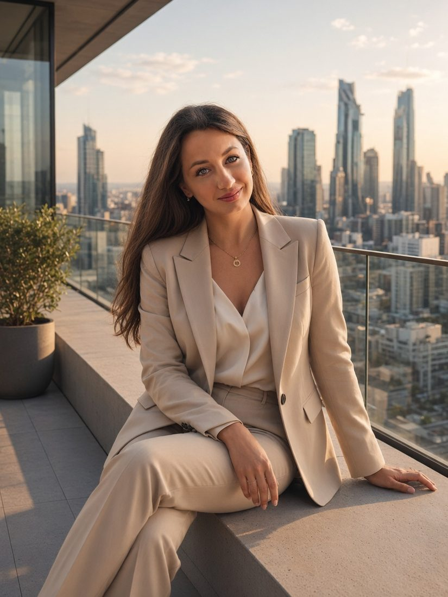

Говорят, леди Элеонора до сих пор
ходит по верхнему залу каждую ночь.
Усадьба Вернон · с 1821 года
Галерея
Галерея
портретов
Возьмите свечу. Подойдите ближе к холстам — некоторые из них просыпаются, когда на них смотрят.
листайте вниз ↓
Леди Элеонорамасло, холст · 1824

Хозяйка домамасло, холст · 1830

Портрет в садумасло, холст · 1836

Дама в аломмасло, холст · 1841

Утренняя прогулкамасло, холст · 1847

Над городоммасло, холст · 1852
Она искала свою дочь в каждой комнате.
Но так и не нашла выхода.